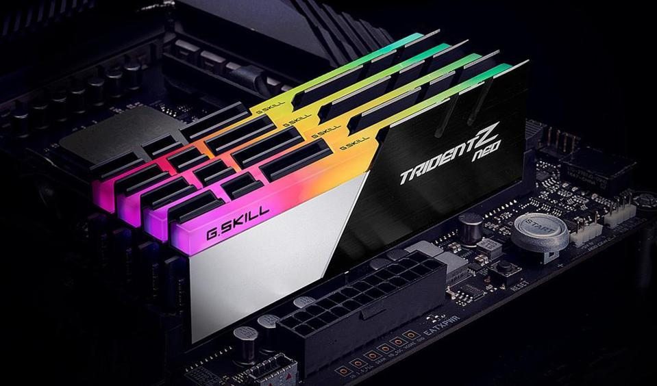
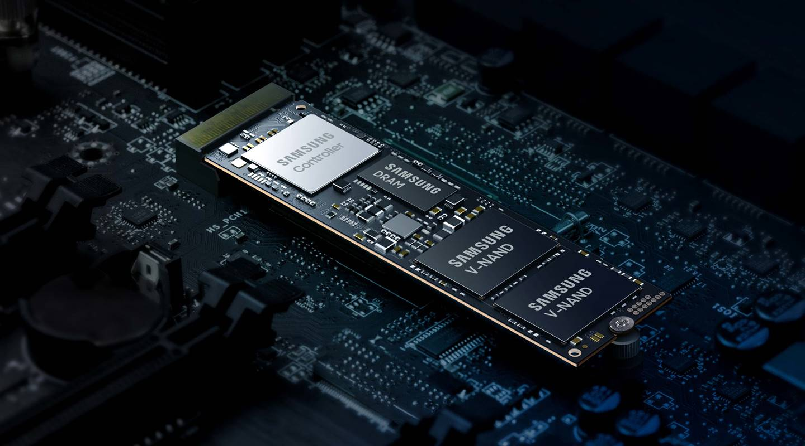
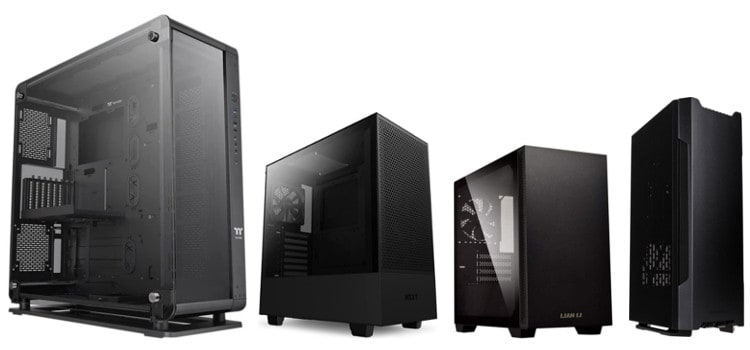

Parts Required and Descriptions
There are many key components that help the computer operate. First, there is the CPU, Central Processing Unit. This is like the brain of the computer. It processes actions that the computer must complete.

Next, theres the GPU, graphics processing unit. The graphics card is what helps the computer turn all the data into visuals on your screen.

Then, there's the PSU, power supply. The power supply is what supplies the recommended amount of power to each component within the computer.

Next, there is your RAM, random access memory. This is a very key component because the RAM makes very quick processes like machine operation, opening programs, or other short time sensitive processes.
Then, there is your storage device. This can be a hard drive, SSD, or m.2 SSD. These all store data such as operation system files or personal files onto your computer for you to access.
Finally, there is your case. The case is the piece that encloses all the components safely inside of it.
